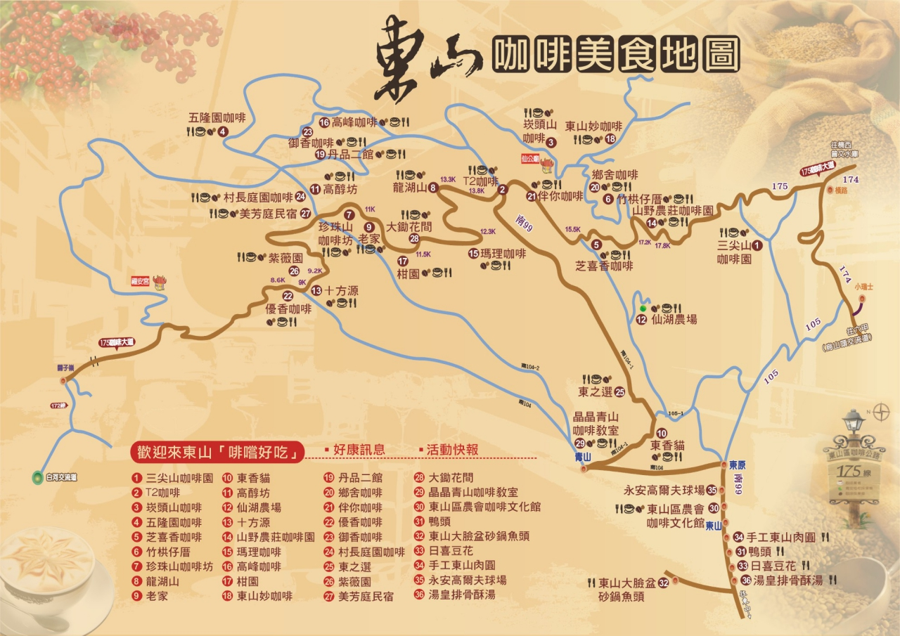

175東山咖啡莊園
首頁
周邊環境
咖啡館
175 東山咖啡公路
來喝咖啡
周邊景點列表
名稱
地址
電話
東山碧軒寺
台南市東山區東山村218號
06-6801009
仙公廟孚佑宮
台南市東山區南勢里大洋14號
06-6861502
仙湖休閒農場
台南市東山區南勢里賀老寮一鄰6-2號
06-6863635
大臉盆砂鍋魚頭
台南市東山區達雲路二段1-1號
06-6802216
阿文肉舟大腸
台南市東山區中興路54號
06-6800480
湯皇東山排骨酥
台南市東山區中興路100號
06-6802856
日喜粉圓豆花
台南市東山區中興路106號
06-6800324
周邊地圖
周邊美食地圖

地址：台南市東山區東中村中興路10XX號 營業時間：週一至週五10:00~16:30； 週六、日12:00~18:30
網頁製作 : ooo